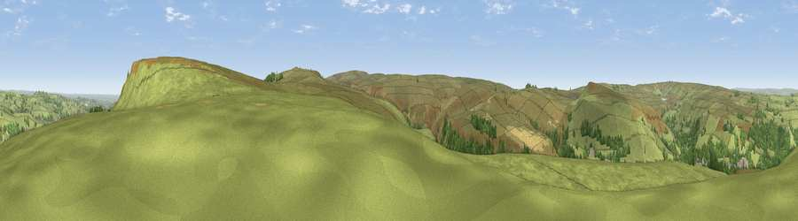

Viewpoint near Marsden
#16883 in England · top 27% of its area beats it · near Marsden · open accessWhere it is
The exact computed spot (SE 05775 10575). Click the marker for map links.
Public access: this spot lies on mapped open-access land (CRoW Act 2000) — you may roam here on foot. Computed from Natural England's CRoW access layer and OpenStreetMap rights of way — not the legal definitive map. Always verify locally.
The view, rendered

A 360° render of this exact spot computed from the terrain model, tree cover and land cover — summer colours, afternoon light, calibrated against photographs of famous viewpoints. Real trees, hedges and buildings will differ in detail.
The panorama
Grey silhouette: terrain skyline in each direction (720 bearings, Earth curvature and refraction included). Dashed green: skyline with trees (+15 m) and buildings (+8 m) as obstacles. Blue strip: how far the ground is visible on each bearing.
Where the view opens
Wedge length = distance to the farthest visible ground on that bearing (vegetation-aware). Rings at 10, 25 and 50 km.
What fills the view
88% grassland · 9% woodland · 1% cropland · 1% built-up
Angular shares of the visible panorama (visual magnitude), not map area. Landscape diversity 0.19 (0–1 Shannon).
Key numbers
More beautiful places nearby
The staircase of upgrades: each row has a higher view potential than everything closer. Driving times are estimates from straight-line distance, calibrated against real road routing — check an actual route before setting out.
| Place | Direction | Drive | Score |
|---|---|---|---|
| Viewpoint near Marsden | ENE · 1 km | ~3 min | 68.3 |
| Viewpoint near Marsden | ENE · 1 km | ~4 min | 71.0 |
| Viewpoint near Greenfield | SW · 10 km | ~19 min | 76.0 |
| Viewpoint near Carrbrook | SSW · 12 km | ~23 min | 77.1 |
| Viewpoint near Edenfield | WNW · 25 km | ~40 min | 77.5 |
| Darwen Hill | WNW · 39 km | ~59 min | 80.7 |
| White Brow | W · 40 km | ~59 min | 82.9 |
| Warton Crag | NW · 84 km | ~108 min | 83.2 |
53.59172, -1.91423 · source: screening · position refined by local search. Computed location — check access rights before visiting.